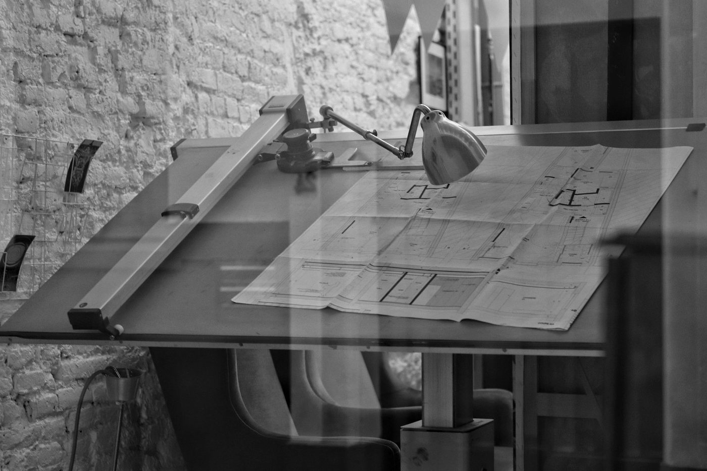

Stüdyo
Ankara · 2014
Elif Ülger Yalçın
2Dsign Mimarlık ve Tasarım’ın kurucu mimarı. Beytepe’deki stüdyosunda ekibiyle birlikte kafe, restoran, mağaza, ofis ve konutlar tasarlıyor.

Çizim masasında
Bir kafede tezgâhın yüksekliğini, sedirin derinliğini ve duvar kaplamasının nerede biteceğini aynı kesitte çizeriz.
Mekâna özel bir parça gerektiğinde mobilyayı da biz tasarlarız. İlk numuneyi atölyede görür, montajını yerinde takip ederiz.